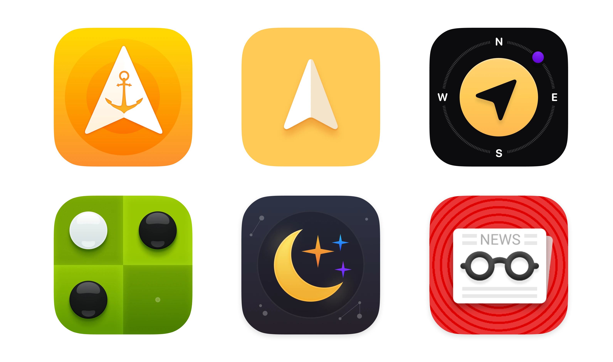
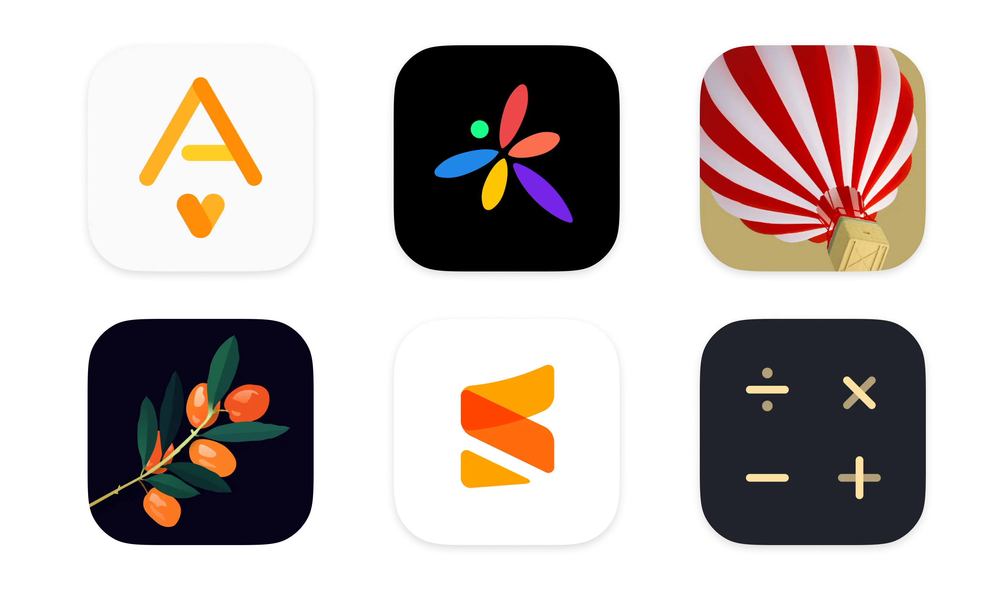
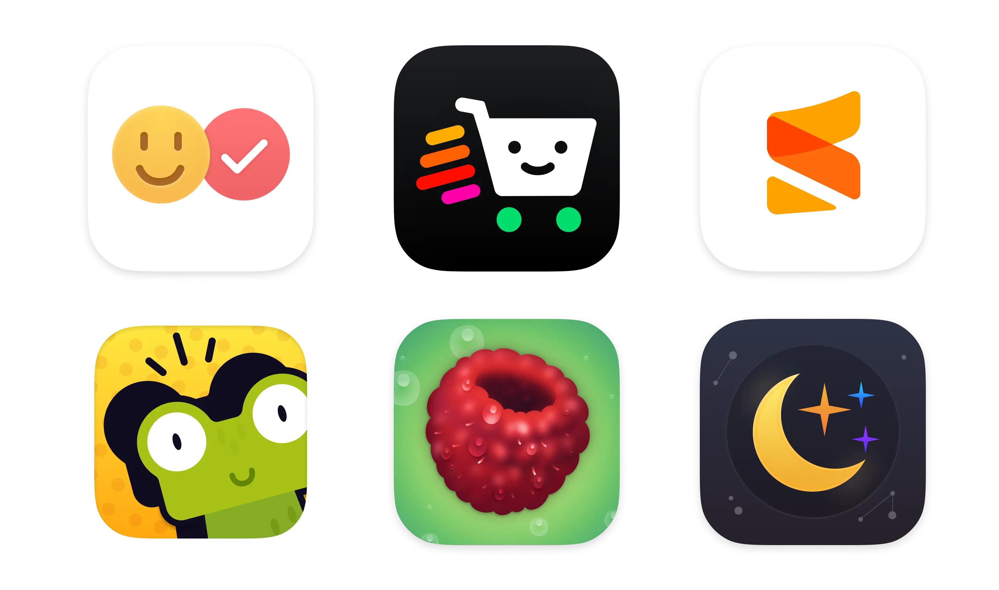

My iOS App Icons Design
October 23, 2024
Through my career I have created some iOS app icons. The biggest challenge is to express app idea through simple graphics that can be readable without additioonal explanation. At the same time, the icon should be unique, so researching the competition is always necessary.
Some of the icons were A/B tested to find the best performing versions.
  